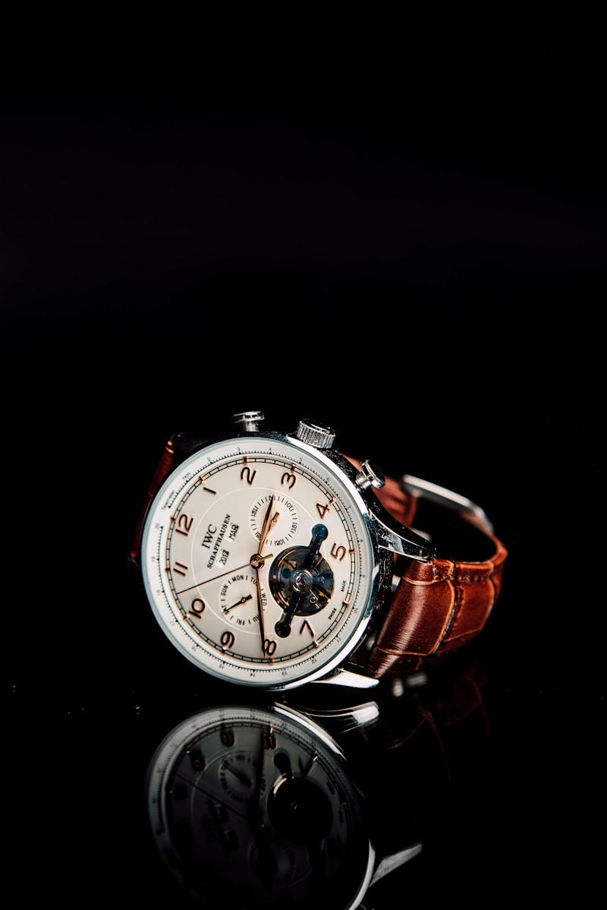
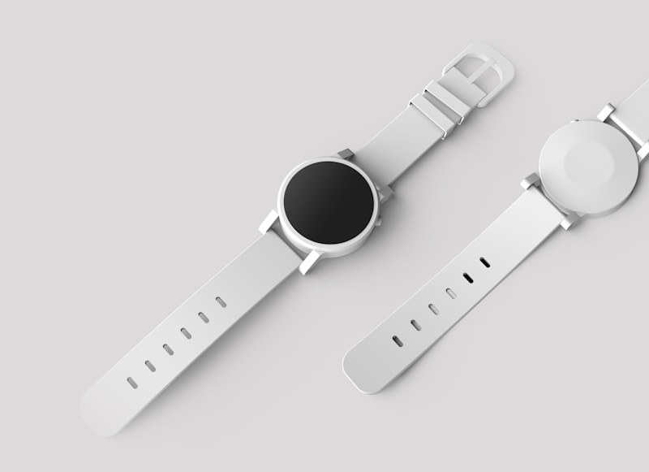
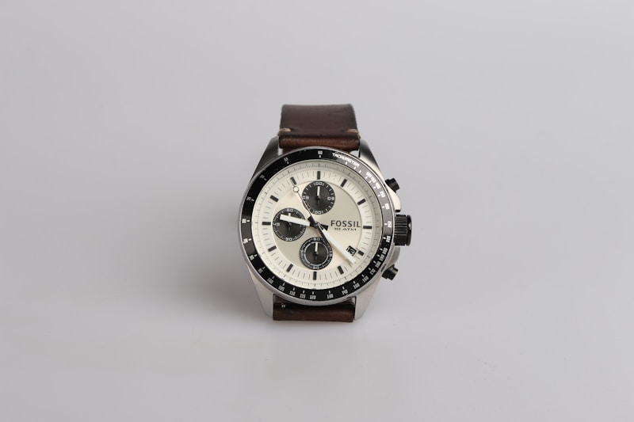
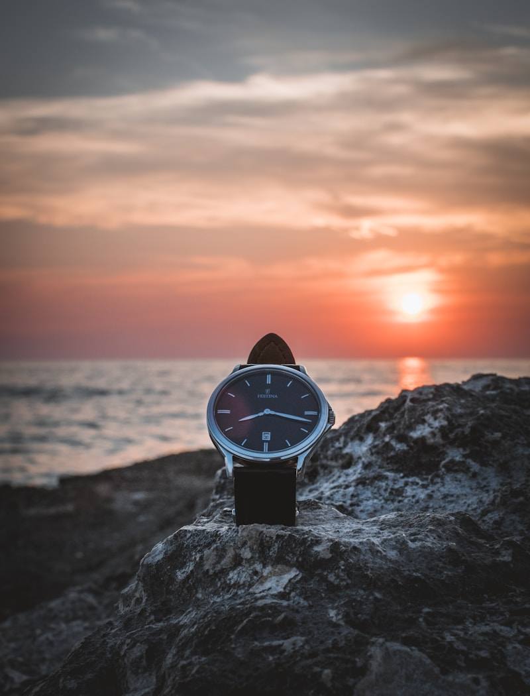
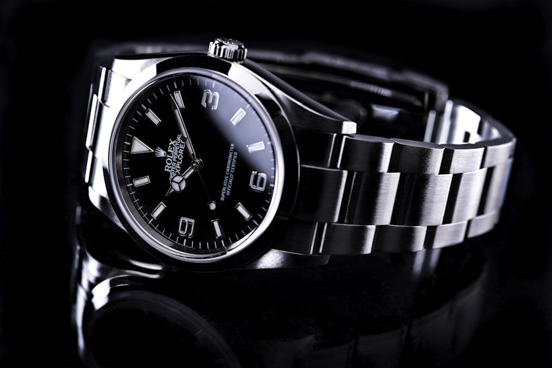
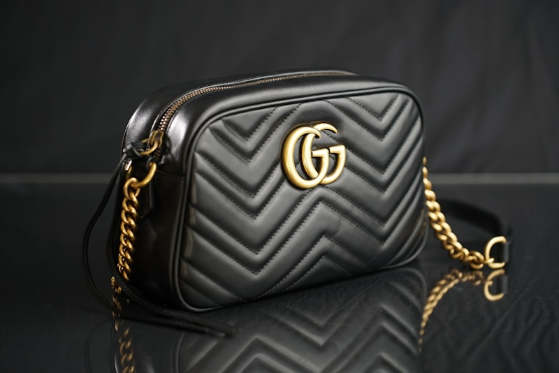
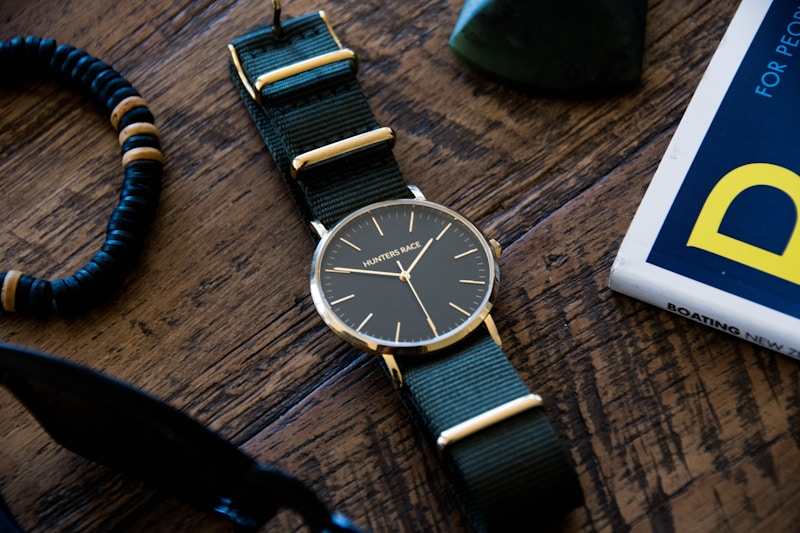

Horology TheoryThe Evolution of Astronomical Watch Complications
Tracing the mathematical journey from ancient astrolabes and celestial clocks to modern wristwatch moonphases.
Read Full Treatise → Micro-Engineering
Micro-Engineering
Mastering the Tourbillon: Gravity-Defying Horological Art
How Abraham-Louis Breguet’s 1801 invention evolved into modern tri-axial orbital flying tourbillons.
Read Full Treatise →
Space MetallurgyMeteorite Dials: Extraterrestrial Iron in Luxury Watches
The metallurgical science of cutting, acid-etching, and stabilizing billion-year-old Widmanstätten crystal structures.
Read Full Treatise →
Mechanical LogicThe Definitive Guide to Perpetual Calendars & Leap Years
Deconstructing the complex 48-month program wheel, grand levier mechanics, and secular gear trains.
Read Full Treatise → Movement Comparative
Movement Comparative
Mechanical vs. Spring Drive vs. Quartz: Connoisseur Breakdown
An objective evaluation of energy transfer, harmonic oscillators, quartz tri-synchro regulators, and escapements.
Read Full Treatise →
Materials ScienceSilicon Escapements & Anti-Magnetic Mastery in Horology
How monocrystalline silicon hairsprings and diamond-coated escapement wheels conquer 15,000 Gauss magnetic fields.
Read Full Treatise →
Collection StrategyBuilding a Three-Watch Luxury Collection for Any Occasion
The ultimate architectural matrix: pairing an astronomical dress piece, sports chronometer, and weekend voyager.
Read Full Treatise →
Atelier FinishingThe Art of Hand-Finishing: Anglage, Perlage & Côtes de Genève
A magnifying loupe inspection of inward corner beveling, circular graining, and mirror-polished black screw heads.
Read Full Treatise →Investing in Independent Horology: The Rise of Artisanal Maisons
Why independent watchmakers are outperforming commercial conglomerate brands at international watch auctions.
Read Full Treatise →Space-Age Metallurgy: Grade 5 Titanium, Ceramic & Ceragold
Analyzing thermal conductivity, Vickers hardness ratings, scratch resistance, and micro-machining tolerances.
Read Full Treatise → Collector Care
Collector Care
Proper Winding, Servicing & Storage of High-Complication Watches
Essential protocols for mainspring torque management, watch winder settings, and synthetic lubricant longevity.
Read Full Treatise →
Horological StandardsChronometer Certifications: COSC, Geneva Seal & METAS Master
A rigorous comparative guide to the world’s most prestigious accuracy, water resistance, and magnetic testing standards.
Read Full Treatise →